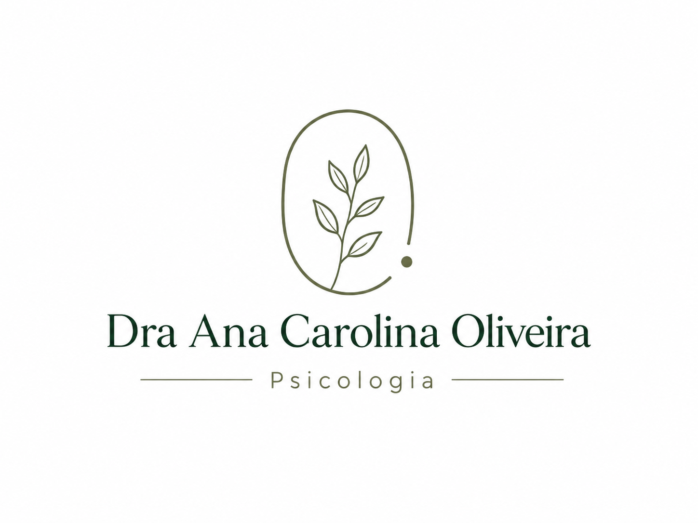
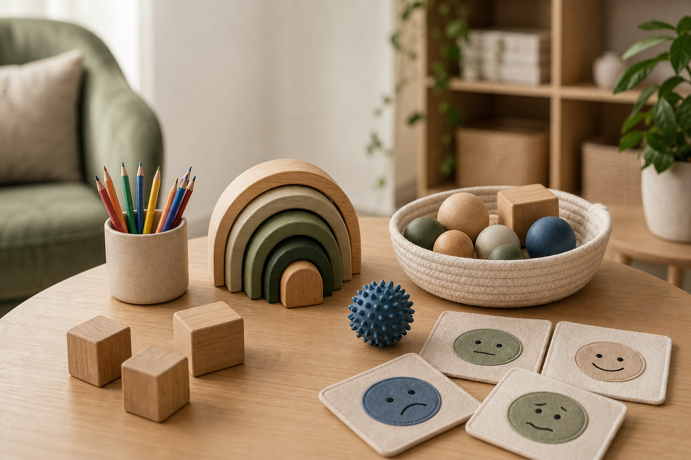

Brincar também comunica
Recursos lúdicos ajudam a criança a mostrar emoções, medos, interesses e formas de lidar com o mundo.

Ana Carolina Oliveira Psicóloga Clínica | CRP/SP 06/228063Psicoterapia infantil, adolescente e adulto
Ana Carolina Oliveira | Psicóloga Clínica | CRP/SP 06/228063
Psicoterapia para crianças, adolescentes e adultos, com escuta acolhedora, orientação aos responsáveis e um olhar técnico para emoções, comportamento, ansiedade, socialização e desenvolvimento, incluindo situações em que há suspeitas de TEA ou TDAH.
Atendimento presencial e online | Av. Salgado Filho, 252, Centro, Guarulhos-SP
Quando procurar ajuda
A psicoterapia pode ajudar quando seu filho ou sua filha apresenta sinais emocionais, comportamentais, escolares ou de desenvolvimento que começam a trazer sofrimento para a criança, para o adolescente ou para a família.
O objetivo não é rotular a criança, mas compreender o que ela está comunicando por meio do comportamento, das emoções e das dificuldades do dia a dia.
A psicoterapia ajuda a compreender o que está por trás desses sinais e a construir caminhos mais saudáveis para a criança e para a família.

Acolhimento lúdico e neuroafirmativo
Algumas crianças chegam falando pouco, outras exploram o ambiente, brincam, desenham, perguntam, se movimentam ou precisam de mais tempo para confiar. No atendimento infantil, esses modos de expressão são acolhidos com cuidado clínico e respeito às singularidades.
Recursos lúdicos ajudam a criança a mostrar emoções, medos, interesses e formas de lidar com o mundo.
O processo considera ritmo, necessidade de previsibilidade, comunicação e possíveis sensibilidades.
Os responsáveis recebem devolutivas para entender melhor a criança e apoiar o cuidado em casa.
Como a psicoterapia pode ajudar
Ajuda a criança ou adolescente a reconhecer emoções, expressar sentimentos e desenvolver formas mais saudáveis de lidar com desafios.
Os pais participam do processo por meio de devolutivas e orientações, fortalecendo o cuidado também fora das sessões.
Cada caso é acompanhado de forma ética, com avaliação inicial, plano terapêutico e acompanhamento das necessidades específicas, sem reduzir a criança a um rótulo.
Atendimentos
Para crianças de 2 a 8 anos. O atendimento utiliza recursos lúdicos para que a criança possa se expressar, compreender emoções e desenvolver novas formas de lidar com situações do dia a dia, respeitando seu ritmo, sua comunicação e suas formas de brincar.
A primeira sessão é com os responsáveis, para entender a história e orientar o início.Atendimento voltado para questões emocionais, familiares, escolares, autoestima, ansiedade, relações sociais e desenvolvimento pessoal.
Atendimento online a partir dos 12 anos.Espaço de escuta, autoconhecimento e cuidado emocional para adultos que buscam compreender melhor seus sentimentos, relações e padrões de comportamento.
Como funciona o processo
O primeiro contato é feito pelo WhatsApp. No momento do agendamento, é enviado um formulário de triagem para preenchimento.
No atendimento infantil e adolescente, a primeira sessão é realizada com os responsáveis para compreender a demanda. No atendimento adulto, a primeira sessão é usada para conhecer a história, a demanda e os objetivos do processo.
Após as primeiras sessões, são compreendidas as necessidades do caso e definidos os próximos passos do acompanhamento.
No atendimento infantil, os responsáveis participam por meio de devolutivas periódicas e orientações. Quando necessário, pode haver contato com escola, pediatra ou outros profissionais.
A duração do processo varia conforme cada caso. Após a avaliação inicial, é possível alinhar melhor a frequência, as devolutivas aos responsáveis e os próximos passos.
Agenda
Consulte os horários disponíveis da semana e envie a solicitação pelo WhatsApp. A confirmação acontece após o retorno da clínica.
Horários entre 8h e 20h. Toque em um horário para solicitar pelo WhatsApp.
Nenhum horário disponível nesta semana. Fale pelo WhatsApp para consultar encaixes.
Sobre Ana Carolina
CRP/SP 06/228063
Ana Carolina Oliveira é psicóloga clínica formada pela Universidade Guarulhos — UNG e pós-graduanda em Neuropsicologia pela Universidade Municipal de São Caetano do Sul — USCS.
Atua com psicoterapia para crianças, adolescentes e adultos, com abordagem em Terapia Cognitivo-Comportamental. Seu trabalho une escuta acolhedora, fundamentação técnica e orientação às famílias, especialmente em demandas relacionadas à ansiedade, regulação emocional, dificuldades escolares, socialização, TDAH, TOD e TEA.
No atendimento infantil, utiliza recursos lúdicos como forma de expressão e compreensão do mundo da criança, mantendo também o acompanhamento dos responsáveis por meio de devolutivas e orientações ao longo do processo.
Perguntas frequentes
Observe sinais como ansiedade intensa, rigidez, intolerância à frustração, dificuldades escolares, dificuldades de socialização, mudanças importantes de comportamento ou atrasos persistentes no desenvolvimento. Quanto mais cedo esses sinais forem acolhidos e compreendidos, maiores são as chances de reduzir sofrimento e orientar a família de forma adequada.
Sim. A psicoterapia pode ajudar a compreender emoções, comportamento, socialização, frustrações, rotina e necessidades de apoio. Quando necessário, o acompanhamento pode dialogar com família, escola, pediatra ou outros profissionais, sempre respeitando a singularidade da criança.
Sim. Crianças pequenas conseguem se expressar por meio de recursos lúdicos. A brincadeira, o desenho e outras atividades podem ser formas importantes de comunicação no processo terapêutico.
Sim. Os pais não participam da sessão da criança, mas recebem devolutivas e orientações ao longo do processo.
Para a criança pode parecer brincadeira, mas cada recurso utilizado tem um propósito clínico e terapêutico.
Depende de cada caso. Após as primeiras sessões de avaliação inicial, é possível compreender melhor a demanda e alinhar os próximos passos.
Sim. O atendimento pode ser online ou presencial. Para adolescentes, o atendimento online é realizado a partir dos 12 anos.
Com adultos, a primeira sessão é usada para entender a demanda e conversar sobre a triagem preenchida. Com crianças e adolescentes, a primeira sessão é realizada com os responsáveis para compreender a demanda; depois acontece a primeira sessão com o paciente.
O valor da consulta é R$ 150,00.
O atendimento é particular, com emissão de recibo para solicitação de reembolso quando aplicável.
Laudos são emitidos apenas quando há processo específico de avaliação psicológica.
Agendamento
O primeiro passo pode ser uma conversa simples pelo WhatsApp para entender a demanda e verificar a melhor forma de iniciar o acompanhamento.
Agendar pelo WhatsAppAv. Salgado Filho, 252, Centro, Guarulhos-SP
Painel administrativo
Digite a senha para liberar ou bloquear horários exibidos no site.
Senha incorreta.
Disponibilidade
Os horários vão de 8h às 20h. As alterações ficam salvas neste navegador.
Horários atualizados.